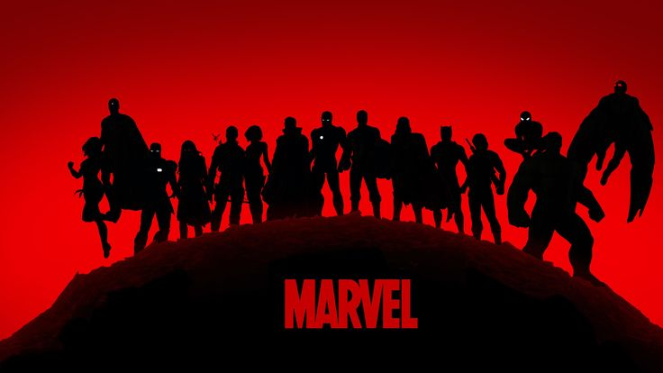
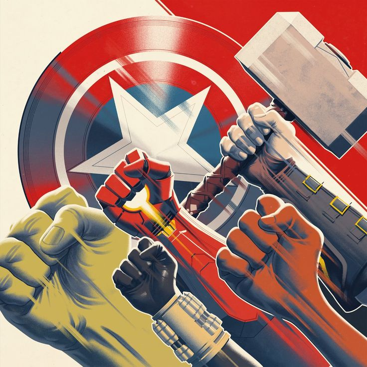

Marvel superheroes
See the superherors image. Stay update
The Marvel Cinematic Universe (MCU) is an American media franchise and shared universe centered on a series of superhero films produced by Marvel Studios. The films are based on characters that appear in American comic books published by Marvel Comics. The franchise also includes television series, short films, digital series, and literature.

Photo Gallery Of Marvel
Films | Disney| series| Marvel Television
By 2005, Marvel Entertainment had begun planning to produce its own films independently and distribute them through Paramount Pictures.[2] Previously, Marvel had co-produced several superhero films with Columbia Pictures, New Line Cinema and others, including a seven-year development deal with 20th Century Fox.[3] Marvel made relatively little profit from its licensing deals with other studios and wanted to get more money out of its films while maintaining artistic control of the projects and distribution.[4] Avi Arad, head of Marvel's film division, was pleased with Sam Raimi's Spider-Man films at Sony Pictures, but was less pleased with others. As a result, Arad decided to form Marvel Studios, Hollywood's first major independent film studio since DreamWorks Pictures. Kevin Feige, Arad's second-in-command,[5] realized that unlike Spider-Man, Blade, and the X-Men, whose film rights were licensed to Sony, New Line Cinema, and Fox, respectively, Marvel still owned the rights to the core members of the Avengers. Feige, a self-described "fanboy", envisioned creating a shared universe, just as creators Stan Lee and Jack Kirby had done with their comic books in the early 1960s.

Films | Disney| series
In October 2014, Marvel Studios held a press event to announce the titles of their Phase Three films.[12] By September 2015, after Marvel Studios was integrated into Walt Disney Studios with Feige reporting to Walt Disney Studios chairman Alan F. Horn instead of Marvel Entertainment CEO Isaac Perlmutter,[13] the studios' creative committee had "nominal" input on the films moving forward, though they continued to consult on Marvel Television productions, which remained under Perlmutter's control.[14][15] All key film decisions going forward were to be made by Feige, D'Esposito and Victoria Alonso.[14] Feige mentioned that Avengers: Endgame (2019) would provide "a definitive end" to the films and storylines preceding it, with the franchise having "two distinct periods. Everything before [Endgame] and everything after".[16] He later said Phase Three would conclude "The Infinity Saga"
More

.jpeg)